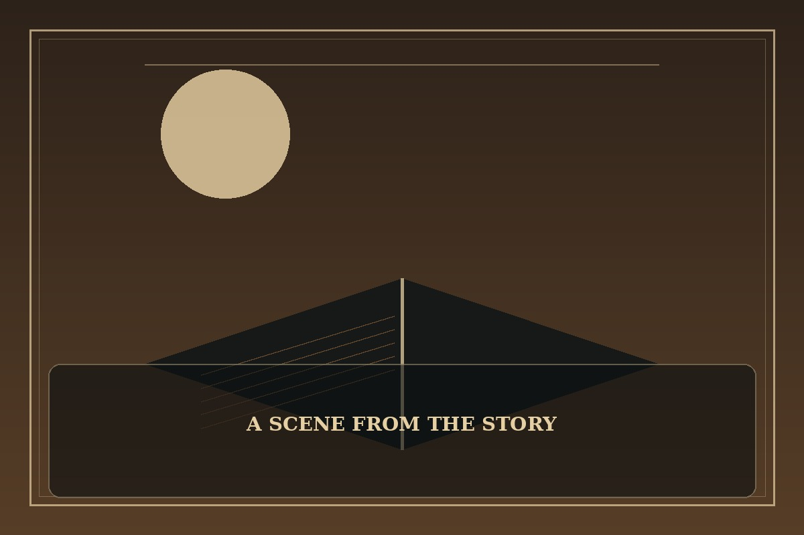

Overgeared
Synopsis
A struggling player discovers that creation can be as powerful as combat. Through unusual commissions and hard-earned skill, he begins to build a reputation that no rare item could grant by itself.
Chapter 1: The Sword That Would Not Sell
The sword on the workbench looked ordinary, except that every buyer who touched it heard a different sound: a bell, a birdcall, or a single note of music. The smith had made it to solve a practical problem and accidentally created a mystery.
Marek listed the blade at a low price, but customers argued over what it should be worth. One wanted to use it in battle; another wanted it for a museum; a third insisted the sound was a sign of an ancient curse. None asked how it had been made.
Marek withdrew the listing and returned to his forge. He changed the grip, balanced the edge, and added a maker’s mark. When the sword finally sold, it was to a traveler who valued the work more than the rumor. For the first time, Marek felt like a craftsman rather than a player chasing a reward.

This fan-made sample is an original piece created for a student website project; it is not an official chapter of Overgeared.